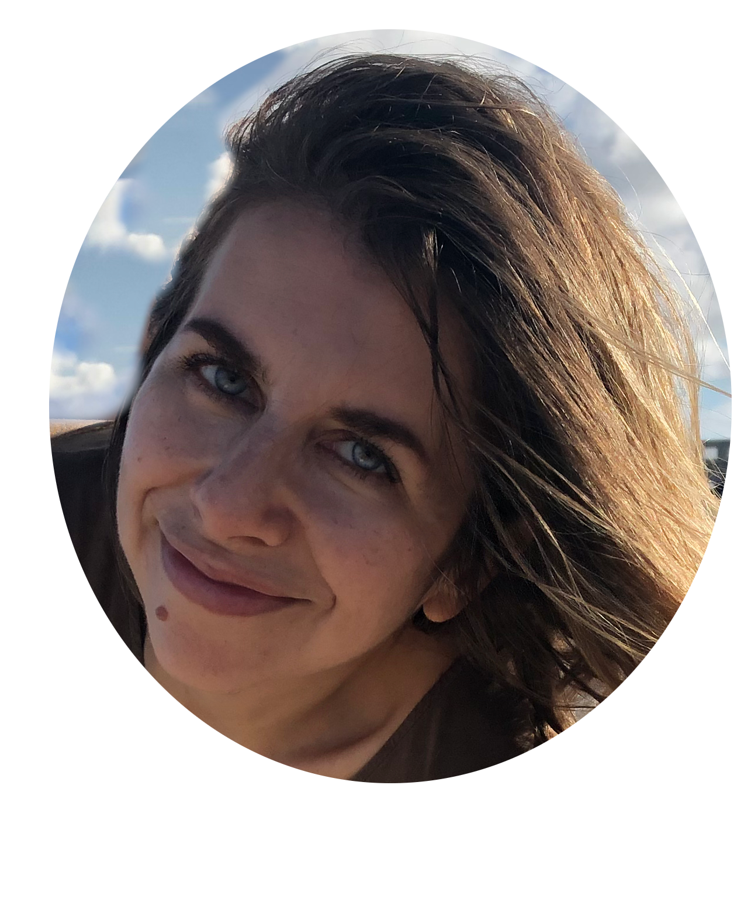
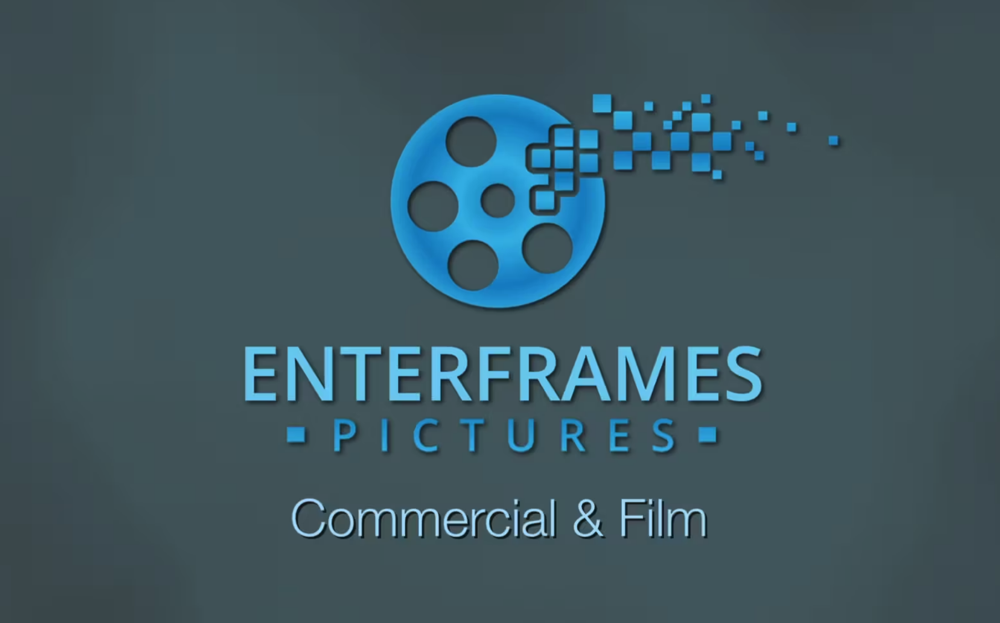
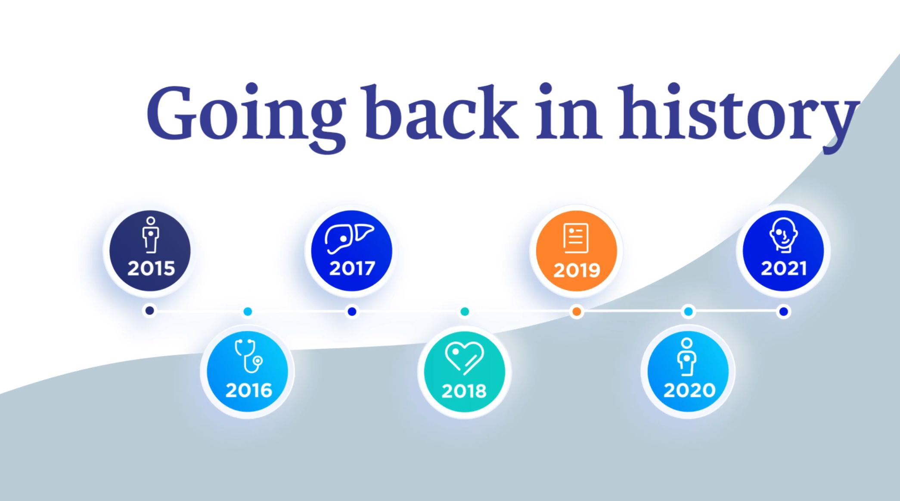
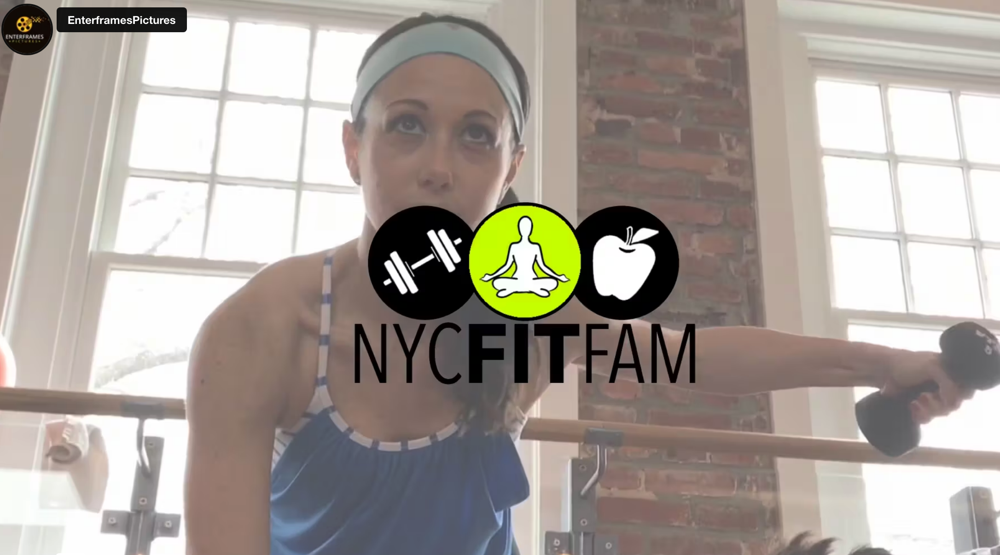
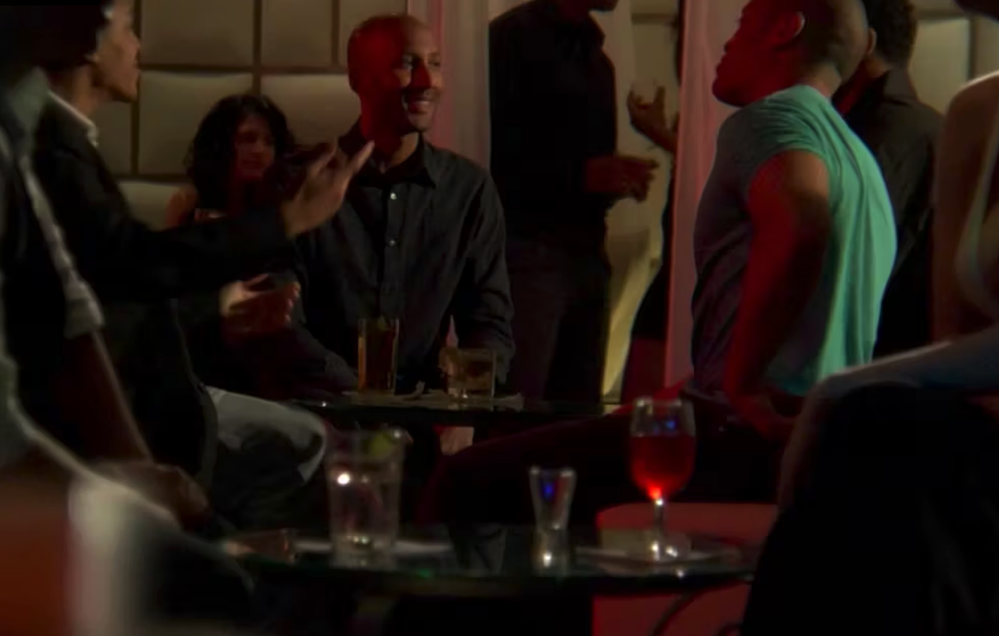
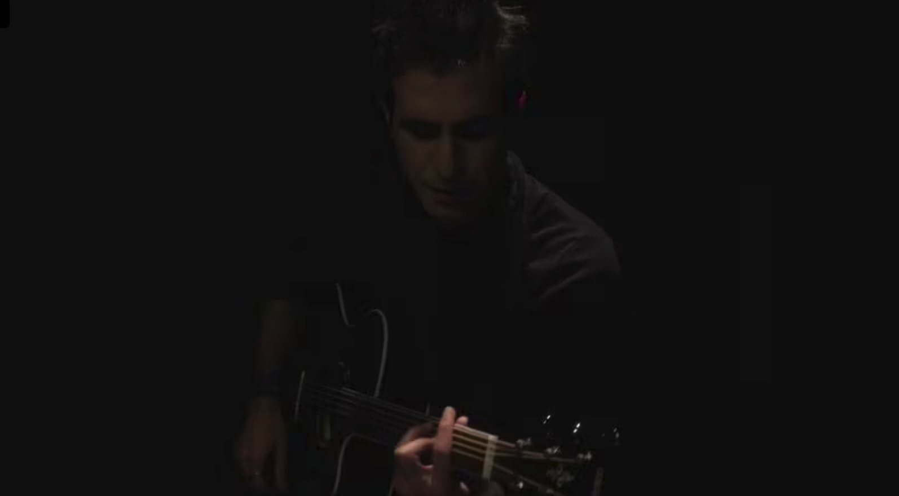

I. Marie Nabut
Film/Video Editor &
Multimedia Designer
Contact
Talented & Accomplished Video Editor & Versatile Multimedia Designer with 15+ Years of Experience
- Ability to be fast and efficient, up to date, and collaborative
- Worked with high profile commercial clients like Pepsi and Gillette
- Provides creative vision through editing and designing solutions
as well as having assistant production skills, including camera,
lighting and writing - Knowledge of latest RAW formats
Technical Skills
Premiere Pro, Avid MediaComposer, Final Cut Pro X Bundle (with Motion & Compressor), DaVinci Resolve, Premiere Pro, After Effects, Photoshop, Media Encoder, Illustrator, Audition, Lightroom
Professional Skills
- Ingesting, transcoding, synching footage
- Excellent sense of pace and timing
- Ability to suggest alternate edits in appropriate moments
- Can handle criticism
- Cross-platform knowledge
Experience
VIDEO EDITOR, MOTION GRAPHICS DESIGNER, COLOR CORRECTOR, VISUAL EFFECTS PRODUCTION ASSISTANT | Gourvitz Communications (NY, NY & Remote) Freelance | December 2005 - December 2011, Independent Contract | January 2012 - January 2015, Freelance | February 2015 - Present
Gourvitz is a worldwide leader in public relations related work from pre to post-production.- Edited on site TV News Broll Packages & Media News Releases (MNR) with PR clients having same day turnaround deadlines and sometimes editing alongside celebrities such as Chef Florence, Mario Batali, and Kate Hudson.
- Additionally, edited presentations, sizzlers, promotionals, Public Service Announcements (PSAs), social media videos, Video News Releases (VNRs), Internet Media Tours (IMTs) and Sattelite Media Tours (IMTs) using video scripts, providing original concepts in collaboration with the clients.
- Collaborated with editors remotely; managed media via edit decision lists and consolidation.
- Delivered and distributed video content for multiple platforms such as Vimeo, Vine, Instagram, Facebook, YouTube, Hightail, Dropbox and Wordpress.
- Color-corrected with DaVinci Resolve to remove facial shine.
- Production assisted in a shoot and interviewed Eddie Falco for an ASPCA Adopt a Pet event.
- Designed visuals of product placement statistics in sizzlers for public relations companies like Weber Shandwick and Edelman; also worked directly with the end client, e.g., Philips.
VIDEO EDITOR & VFX | Best Shot Video (NY, NY & Remote) Freelance | September 2009 - January 2019
Best Shot is a production company and crew service providing any crew position needed.- Rotoscoped and tracked for accurate color correction on Premiere and tracked noise removal using Avid
- Edited on site or office working directly with clients and cameraman on TV news broll packages, sizzlers, MNRs, webinars and video presentations with same day tight deadlines
- Worked late night to edit last minute client revisions and to ensure that clients got final files
- Multi-camera editing and synching correct audio channels to video
PRODUCER & VIDEO EDITOR | Michelman Piano (NY, NY) Freelance | March 2017
- Wrote, produced, shot & edited promotional video featured at www.michelmanpiano.com and business review at Enterframes Pictures on Google
VIDEO EDITOR & VISUAL EFFECTS | Victor Rodriguez & Felicia Lin-"Metropolicks" (NY, NY) Freelance | July 2014 – April 2015
Victor & Felicia are co-athors of the romantic comedy novel, “Metropolicks”.- Edited a series of promotional videos creating visual film style effects
VIDEO EDITOR & MOTION GRAPHICS DESIGNER | News Broadcast Network (NY, NY) Freelance | June 2009 - July 2013
NBN is a fully integrated and award-winning broadcast and digital PR services firm specializing in innovative multi-channel media production and distribution solutions.- Edited directly with producers on TV news broll packages, MNRs, and promotionals with tight turnaround times
VIDEO EDITOR | Rumi -"Nights of Gunshots" Music Video (NY, NY)
MAIN EDITOR | Blaquelight Worldwide, “Indelible” Film (NY, NY) Independent Contract | August 2009 - September 2011
- "Indelible" got the Official Selection of the New York City International Film Festival
- Transferred footage with 2nd editor via FCP 7 Media Manager and sound editor via Open Media Framework Interchange (OMFI)
VIDEO EDITOR | Burson-Marstellar/Proofic (NY, NY) Freelance June 2008 – April 2011
VIDEO EDITOR, MOTION GRAPHICS DESIGNER | BaderTV News, NY, NY Full Time January 2003 – July 2006
Conferences
BLACKMAGIC DESIGN TELEVISION & VIDEO EXPOProduced by Future Media Concepts
Certifications
FUTURE MEDIA CONCEPTSAvid Certified Professional Media Composer Certificate of Completion
Portfolio
Vimeo Profile
Demo Reel
Highlight Reel for Albireo
 YouTube Promotional
YouTube Promotional

Indie Film
Music Video
Student Documentary

Education
UNIVERSITY OF FLORIDAB.F.A. in Fine Arts & Electronic Intermedia (Dean’s List) UNIVERSITY OF UTRECHT Study Abroad with UF - Film Theory HILVERSUM SCHOOL OF ARTS, MEDIA, AND TECHNOLOGY Animation & Video Art